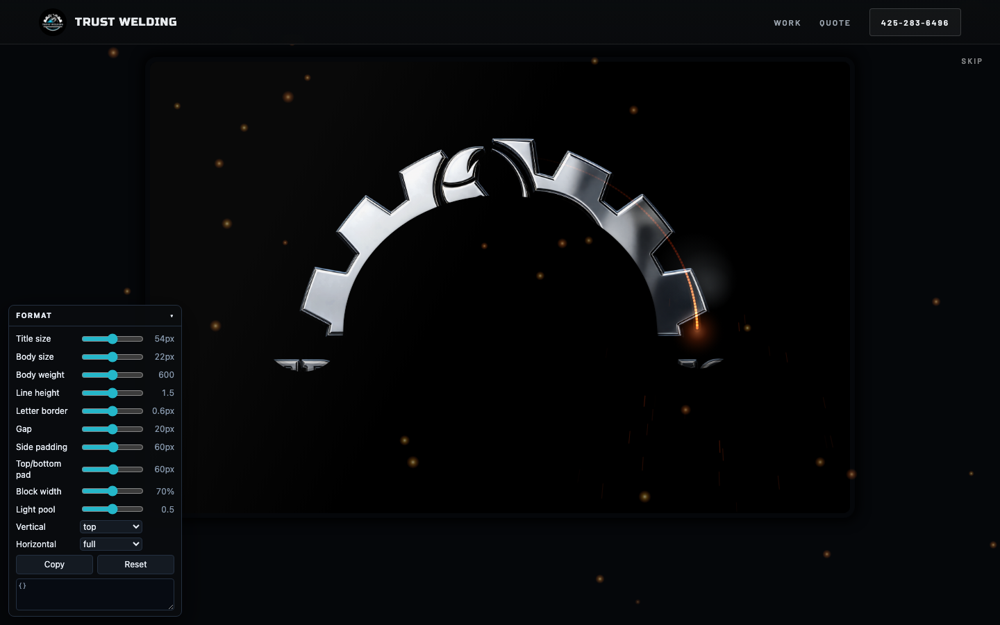
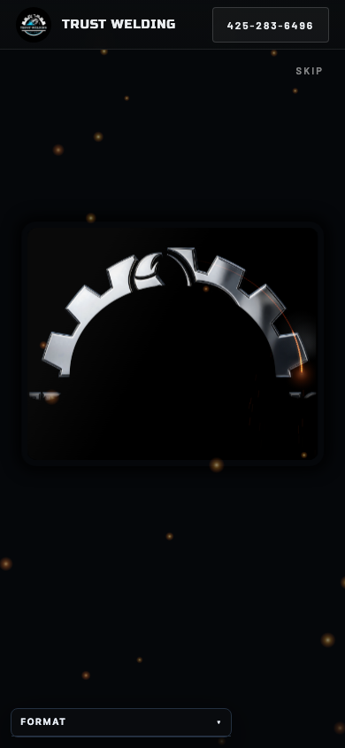

1 · The opening, through the hood


Pitch black, first person through the helmet window, three strikes that lay a hot bead and cool, then the hood lifts off the face and lands on your still. Scroll, tap or Skip ends it early.
Hero & opening system: picture before motion, one event then still; the engine is the hero session's bead take, wired as the pick. findings